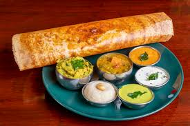

Welcome , Today will see how to make dosa

Ingredients for Dosa Batter
- Rice (regular or parboilded ) - 1.5 cups
- Urad dal (split black gram lentils) – ½ cup
- Fenugreek seeds (methi) – ½ teaspoon
- water
- Salt
- Oil or ghee
Steps to Make Dosa BAtter
- Soak the rice and Dal :
- Soak the rice and fengureek seeds together in a bowl, and the Urad dal in another bowl, for at least 4 to 6 hours
- Grind the Batter
- Ferment the Batter
Steps to Make Dosa
- Heath the pan
- Spread the Dosa : once the tawa is hot, pour a ladle of batter in the center and quickly spread it outwards in a circular motion using the back of the ladle to form a thin layer.
- Cook the Dosa
- Enjoy the dosa